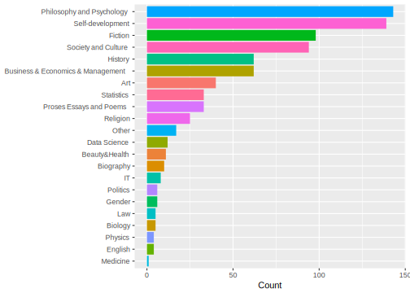
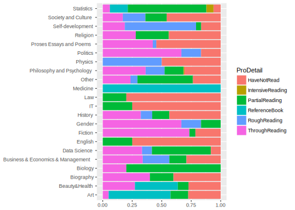

0.2 Basic Statistical Analysis
Here is a plot for counts of books in each category……
pdat <- dat %>%
group_by(Category) %>%
summarise(Count = n())
ggplot(pdat, aes(x = reorder(Category, Count), y = Count, fill = Category)) +
geom_bar(stat = "identity") +
coord_flip() +
theme(legend.position="none", axis.title.y=element_blank()) 
Here is a plot showing the percentage of books I have started (or finished) across different categories.
ggplot(dat,aes(Category, fill = ProDetail)) +
geom_bar(position = "fill") +
coord_flip() +
theme( axis.title.y=element_blank(),
axis.title.x=element_blank()) 